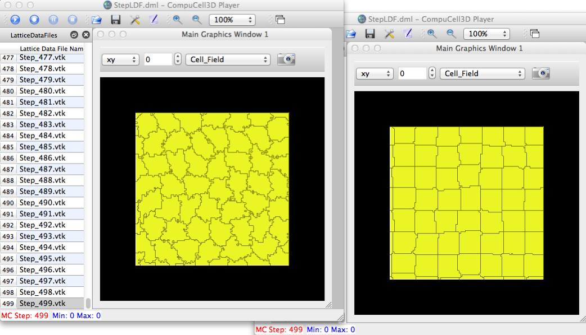

I spent a few hours trying to devise a more elegant, pure Python, solution to doing parameter sweeps, but ended up resorting to this: for a set of params, edit a Python sim file and use 'runScript'. Only tested on OSX so far.
Copy the following code and put it in a script called sweepRun.py in the cc3D install directory (where the runScript is located). The user would then do 'python sweepRun.py' and it will: 1) edit a mysim-0.py file to set the desired params and write to a new sim file, tmpfile.py, and 2) execute multiple batch (runScript) runs and dump .vtk data in multiple sub-directories whose names correspond to the parameter values from the sweep.
#!/usr/bin/python
import string,os,time,itertools
# provide list of param names to (potentially) be changed
paramNames = ["e_med_med","e_med_cell1","e_cell1_cell1"]
# provide lists of possible values for each param in the model (.py) file
# to have "lists" of single values, i.e. no param sweep on them
p1=[0.]
p2=[0.]
# this is one way to generate a list of uniformly sampled params for a single list
x = 1.0; xmax = 9.0; xdel = 2.5
p3 = []
while x < xmax:
p3.append(x)
x += xdel
print 'p3=',p3
# hard-code for now
simFileBaseDir = "/Users/heiland/dev/Glazier/cc3d-3.6.0/Demos/Randy/Simulation"
simFileDir = "/Users/heiland/dev/Glazier/cc3d-3.6.0/Demos/Randy/Simulation"
simFile = os.path.join(simFileDir,"mysim-0.py")
print '-------- simFile =',simFile
for params in itertools.product(p1,p2,p3):
print '----- params =',params
outfile = "p_" # whatever prefix you want
for p in params:
outfile += str(p) + '_'
print 'outfile=',outfile
# simFileTmp = outfile[:-1] + '.py' # if you want to create multiple sim files
# print 'simFileTmp=',simFileTmp
simFileTmp = os.path.join(simFileDir, "tmpfile.py") # if you just want to re-use one sim file
print 'simFileTmp=',simFileTmp
fp = open(simFile, 'r') # we'll read from this file
fpout = open(simFileTmp, "w") # and create this file (as the sim file)
for line in fp:
changed = False
for idxParam in range(len(paramNames)):
pname = paramNames[idxParam]
if string.find(line, pname) > -1:
idx = string.find(line, "=")
if idx > -1: # find assignment stmt
paramVal = params[idxParam]
line2 = line[:idx+1] + str(paramVal) + '\n'
# print line2,
fpout.write(line2)
changed = True
break
else:
changed = True
fpout.write(line)
if not changed:
fpout.write(line)
fp.close()
fpout.close()
time.sleep(0.3)
outfile = os.path.join(simFileDir,outfile)
cmd = 'runScript.sh -i ' + simFileTmp + ' -o ' + outfile # does not like --frequency=10 for some reason
print cmd
os.system(cmd)
time.sleep(0.3)
In the above script, we simply demonstrated a single parameter sweep (for p3). Two other potentially modifiable params (p1,p2) had fixed values. Note that the param names need to match those found in your simulation file (.py), e.g.:
paramNames = ["e_med_med","e_med_cell1","e_cell1_cell1"]
~/dev/Glazier/cc3d-3.6.0/Demos/Randy/Simulation$ ty mysim-0.py
def configureSimulation(sim):
import CompuCellSetup
from XMLUtils import ElementCC3D
cc3d=ElementCC3D("CompuCell3D",{"version":"3.6.0"})
potts=cc3d.ElementCC3D("Potts")
potts.ElementCC3D("Dimensions",{"x":100,"y":100,"z":1})
# potts.ElementCC3D("Steps",{},1000)
potts.ElementCC3D("Steps",{},500)
potts.ElementCC3D("Temperature",{},5)
potts.ElementCC3D("Flip2DimRatio",{},1)
potts.ElementCC3D("NeighborOrder",{},2)
potts.ElementCC3D("Boundary_x",{},"Periodic")
potts.ElementCC3D("Boundary_y",{},"Periodic")
cellTypePluginElement=cc3d.ElementCC3D("Plugin",{"Name":"CellType"})
cellTypePluginElement.ElementCC3D("CellType", {"TypeName":"Medium","TypeId":"0"})
cellTypePluginElement.ElementCC3D("CellType", {"TypeName":"Foam","TypeId":"1"})
# names/values of cell type contact energies
e_med_med=0
e_med_cell1=0
e_cell1_cell1=3.
contact=cc3d.ElementCC3D("Plugin",{"Name":"Contact"})
contact.ElementCC3D("Energy",{"Type1":"Medium","Type2":"Medium"},e_med_med)
contact.ElementCC3D("Energy",{"Type1":"Medium","Type2":"Foam"},e_med_cell1)
contact.ElementCC3D("Energy",{"Type1":"Foam","Type2":"Foam"},e_cell1_cell1)
contact.ElementCC3D("NeighborOrder",{},3)
volume=cc3d.ElementCC3D("Plugin",{"Name":"Volume"})
volume.ElementCC3D("TargetVolume",{},25)
volume.ElementCC3D("LambdaVolume",{},0.0)
surface=cc3d.ElementCC3D("Plugin",{"Name":"Surface"})
surface.ElementCC3D("TargetSurface",{},17)
surface.ElementCC3D("LambdaSurface",{},0.0)
volume.ElementCC3D("VolumeEnergyParameters",{"CellType":"Foam","TargetVolume":25,"LambdaVolume":2.0})
uiElement=cc3d.ElementCC3D("Steppable",{"Type":"UniformInitializer"})
region=uiElement.ElementCC3D("Region")
region.ElementCC3D("BoxMin",{"x":0,"y":0,"z":0})
region.ElementCC3D("BoxMax",{"x":99,"y":99,"z":1})
region.ElementCC3D("Gap",{},0)
region.ElementCC3D("Width",{},15)
region.ElementCC3D("Types",{},"Foam")
CompuCellSetup.setSimulationXMLDescription(cc3d)
import sys
from os import environ
from os import getcwd
import string
sys.path.append(environ["PYTHON_MODULE_PATH"])
import CompuCellSetup
sim,simthread = CompuCellSetup.getCoreSimulationObjects()
configureSimulation(sim)
# add extra attributes here
CompuCellSetup.initializeSimulationObjects(sim,simthread)
# Definitions of additional Python-managed fields go here
#Add Python steppables here
steppableRegistry=CompuCellSetup.getSteppableRegistry()
from mysimSteppables import simulationStetppable
steppableInstance=simulationStetppable(sim,_frequency=100)
steppableRegistry.registerSteppable(steppableInstance)
CompuCellSetup.mainLoop(sim,simthread,steppableRegistry)

Showing differences in a couple of the runs (using File -> Open Lattice Description Summary File)